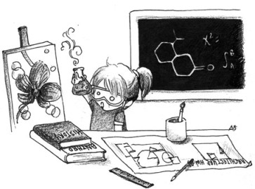

Sadece çekiç yetiştirmek
 Eğitim sistemimizde en başarılılar belli mesleklere yöneltiliyor. Bu yıllara göre değişebiliyor. Şimdilerde durum bilgisayar, elektrik-elektronik ve endüstri mühendislikleri ile tıp leyhinde. Bütün üniversitelerde istisnasız bu meslekler en gözde öğrencileri alıyor. Neredeyse sözel veya sanatsal hiçbir meslek bu kadar gözde değil. En üzücü olanı ise idealist öğrencilerin hayallerini süsleyen matematik, fizik, biyoloji gibi bölümlerin sırf bu kadar puan yaptın, yazık olmasın diye gelen mahalle baskısından çektikleri.
Zamanında Almanya'da bilişsel bilimcilerin düzenlediği kod reçeli (code jam) denilen birkaç günlük bir etkinliğe katılmıştım. Aralarındaki bilgisayarla görü alanındaki tek araştırmacı bendim. Hatta bilgisayar mühendisi kökeninden gelen ender katılımcılardandım. Biyoloji veya fizik mezunu birçok katılımcı mevcuttu. Öğle yemeklerinde yazılımla ilgili muhabbet dönerdi. Ağzım açık dinlerdim. Memlekette alışmışım, temel bilimciler C'yi öğrenene kadar mezun olurlar. Oysa burada durum bambaşka; nasıl olur da bu kadar iyi yazılım bilirler! Geliştirdikleri onlarca yazılım kütüphanesi var. Bir eleman vardı, Pragmatic Programmer kitabını ondan öğrendim, kendisi biyolog... Bir de bizim üniversite sayfalarımıza bir göz atın. Kütüphane geliştirmeyi bir yana bırakın, çoğunun web sayfası bile yok.
Boğaziçi'nde Calculus dersi veya herhangi bir kitle dersi alan herkes bilir. Bölümlere göre öğrencileri sıralarsak üniversite giriş puanlarıyla korelasyon cidden de çok yüksek çıkar. Geçende fizikten bir hocam eğitim bölümü öğrencilerinden yakınıyordu. Hazırladığı excel tablosunu gösterdi; fizik giriş dersinden kalan öğrencilerin çoğu eğitim fakültesi öğrencileri. Hatta çiftdikişden bile fazla. İleride fizik öğretmeni olacaklar da azınlık değil! Bölümler bir organizmanın organları gibiler. Bir taraf eksik kalınca diğerleri de bundan nasibini alıyor. Biz matematik bölümünden matematik dersi alırız, başkası bizden programlama öğrenir, birlikte sosyal dersler alırız...
Maalesef ipler en baştan kopuyor. Öğrenciler çeşitli mesleklere yöneltilmek yerine belli meslek gruplarına resmen itiliyor ve bölümler arası uçurum doğuyor. Buna tek yönlü yetiştirilen öğrenciler de eklenince etraf çekiçten geçilmiyor. Sanki şu hayattaki her problem çivi!
Not: Üniversite giriş sınavlarının bir öğrencinin ne kadar iyi olacağının salt göstergesi olduğuna inanmıyorum. Fakat tamamen değersiz olduğunu da düşünmüyorum. Bu sebeple, başarılı tabirini kullandım. Buradaki başarı eğitim sisteminin sunduğu basamaklardaki başarıyı ifade ediyor.


1 yorum
Epeydir yazıda bahsedilenlerin bazılarını sorguluyordum ben de. Tabii sınırlı bilgi ve gözlemimle.
İki hafta önce kütüphanede çalışmak için oturduğum masanın ucundaki kitaba gözüm gitti. Richard Dawkins'i ders kitabı okuyorlar, ne kadar güzel bir bölümdelerdir, kim bilir ne kadar zevk alarak giriyorlardır derslere dedim.(Bilgisayar bilimini sevmiyor kesinlikle değilim) Ardından kitabın sahibi arkadaş grubunu gözlemlemeye ve dinlemeye devam ettim. Benim sandığım kadar mutlu daha doğrusu geleceğe karşı umutlu değillermiş. Onlara, onların okudukları bölümde okumak isterdim dediğimde yüzlerinde bir tebessüm oluştu. Okuduğum mühendislik bölümü için söylenen "İşsiz kalmazsın" cümlesini bir kez de onlardan duydum.
Türkiye'de en yüksek puanlara sahip öğrencilerin tıp fakültelerini tercih etmesinin, tıp biliminin en iyi bilim dalı olmasından ya da misal tarih biliminin,çeviribilimin, gökbilimin.. tıp bilimi kadar değerli olmamasından değil bence.
Hatta kim bilir şu dershanelerin rehberlik hocalarının çoğunu susturmayı başarsak buralarda daha pek çok başarılı birey olurdu.
Belki ben de Carl Sagan ile, Feynman ile daha önce tanışmış olsaydım, bilimin önemli olduğu kadar, bir o kadar da eğlenceli olduğunu görür, ona göre bir tercih listesi yapardım. Misal ben, şu aralar etrafımdaki insanların heves kıran konuşmalarını duymamak adına, belli bir üniversitenin bilim tarihi yüksek lisans programına başvurmayı düşündüğümü ve araştırdığımı sanki çok çok önemli bir sır gibi saklıyorum herkeslerden.
Dilerim gelecek nesiller, hayatının geri kalanı ile ilgili tercihlerini büsbütün dershanelerin rehberlik hocalarına emanet etmezler...